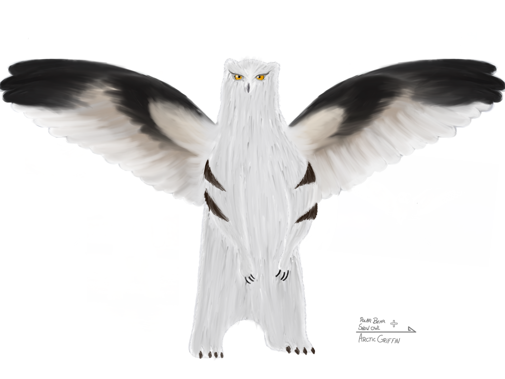
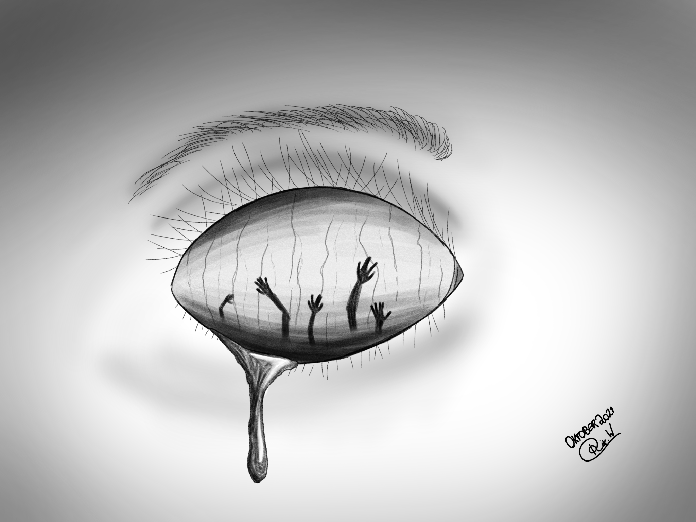
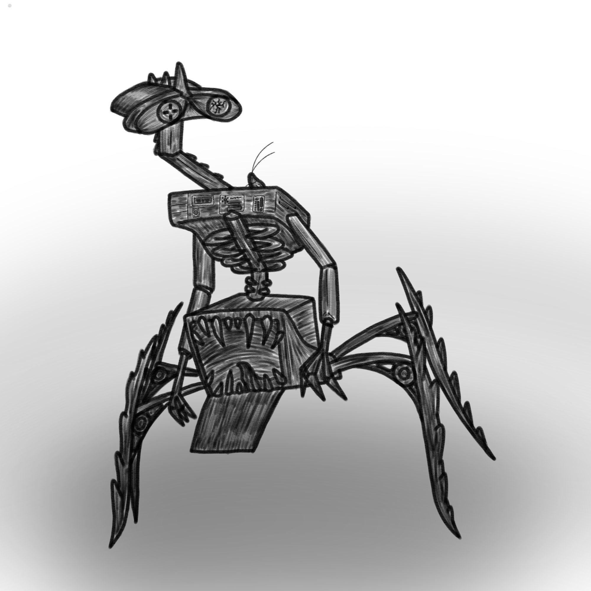
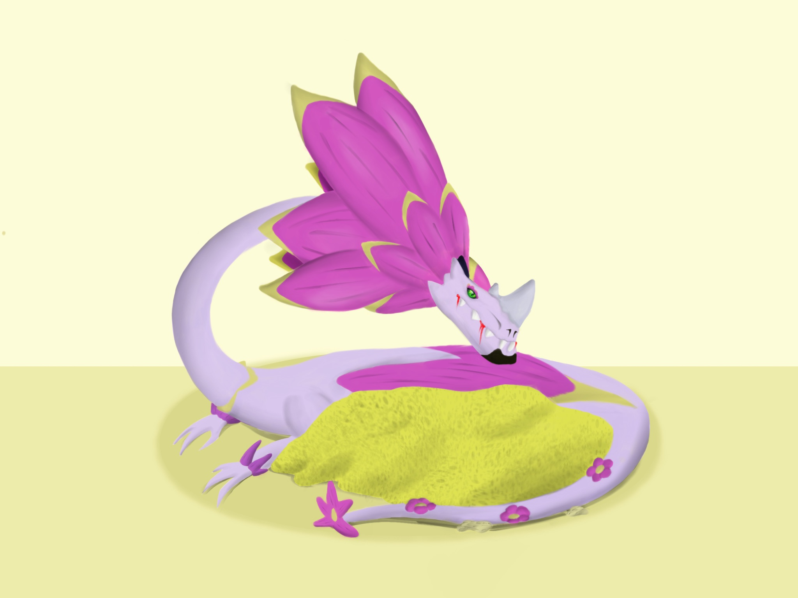

Kunst portfolio
Op volgorde van oudste werken naar nieuwere

Mijn eerste werk: De arctic griffin.
Gemaakt in 2021 voor een teken wedstrijd, hierin moesten we een griffin maken van twee dieren gecombineerd.

Mijn tweede werk: N/A
Persoonlijk werk gemaakt in 2021

Mijn derde werk: Horror Wall-e
Gemaakt in 2022 ook voor een teken wedstrijd, hier moesten we een bekende character vertalen naar een nieuwe genre.

Mijn vierde werk: Flowerdragon
Ook gemaakt voor een wedstrijd waarin we een eigen draaksoort moesten maken.